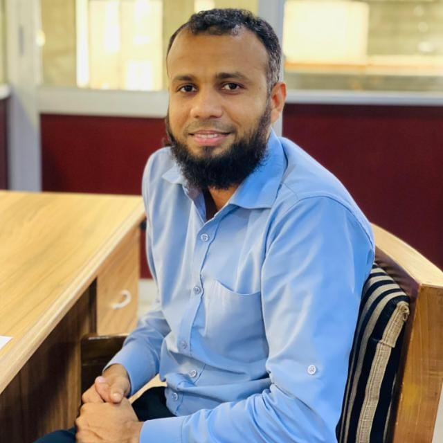

Azeem Ahamed

Email: miazeem@gmail.com
Phone: 0779673569
Location: Batticaloa, Sri Lanka
LinkedIn:
linkedin
GitHub:
github
Profile
Passionate and results-driven Software Developer with hands-on experience in building dynamic web applications and solving real-world problems using HTML, CSS, JavaScript, and modern frameworks.
Skills
- HTML5, CSS3, JavaScript
- React.js, Next.js (basic knowledge)
- Git & GitHub
- Responsive Web Design
- Problem Solving
Experience
Junior Web Developer – Wistsberry
- Designed and developed company websites using HTML/CSS/JS
- Collaborated with designers to create responsive layouts
- Improved website speed and user experience
Education
Bachelor of Information Technology – University of Moratuwa (R)
Projects
- Portfolio Website – Personal website showcasing projects and skills
- Todo App – JavaScript-based task manager with local storage
Languages
- English – Fluent
- Tamil – Fluent
- Sinhala – Fluent
References
Available on request.